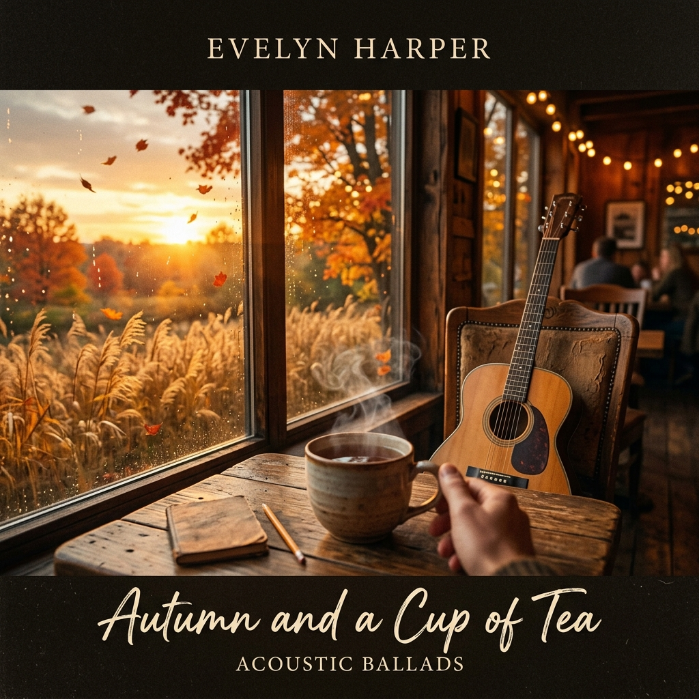

🎶
KYANOS MUSIC STUDIO
국립음악창작원 독자 AI 음악 생성 포털
오늘의 국정 창작:
1곡 생성 가능
(시스템 자원 보호 모드)
커스텀 모드 (시/가사)
간편 멜로디 모드
🌐
미래 확장 플랜
: 향후 대국민 개방 시 분산 클라우드 큐(Queue)로 다수 동시 접속 확장 지원
곡 제목 (Title)
원작 시 및 가사 (Lyrics)
파이튼 님의 자작시를 붙여넣으세요
음악 스타일 및 악기 (Style & Instrument)
영어/한글 지원
🍂 어쿠스틱 포크
🎹 피아노&첼로
🎺 오르간&백파이프
🎻 웅장한 오케스트라
🌿 힐링 앰비언트
생성 길이 (Duration)
15초 (데모 고속)
25초 (표준)
45초 (심층)
✨ 일일 독자 음원 생성 (Generate)
* GPU(RTX 3050) 과열 방지 및 PC 반응성 보호를 위해 VRAM 60% 상한 캡 적용
🎶 키아노스 공식 생성 음원 라이브러리
총 4곡 보유

가을 그리고 차 한잔
파이튼 원작 시 | 어쿠스틱 기타와 서정적 보컬의 온화한 가을 발라드
⏱️ 03:28
• 공식 음원
• 72 BPM
🎺
희망찬 새벽의 오르간과 백파이프 (부드러운 선율)
국립음악창작원 독자 생성 v2 | 멜로우 톤 백파이프와 파이프 오르간 하모니
⏱️ 00:22
• 로컬 SI 생성
• 100 BPM
⛪
희망찬 새벽의 오르간과 백파이프 (오리지널)
국립음악창작원 독자 생성 v1 | 웅장한 스코틀랜드 감성과 파이프 사운드
⏱️ 00:20
• 로컬 SI 생성
• 95 BPM
무덤 앞에서 (At My Mother's Grave)
파이튼 원작 시 | 어머니를 향한 애틋한 그리움과 서정적인 사모곡
⏱️ 03:45
• 공식 음원
• 서정 발라드
🍂
가을 그리고 차 한잔
파이튼 (Python)
⏮️
▶
⏭️
0:00
3:28
💾 음원 다운로드